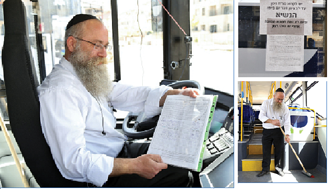

הוא נולד בשכונת הארלם שבמנהטן לפני 97 שנים, עלה לארץ הקודש והתיישב בה 14 שנה, וש
הוא נולד בשכונת הארלם שבמנהטן לפני 97 שנים, עלה לארץ הקודש והתיישב בה 14 שנה, ושוב חזר לאיסט–סייד שבמנהטן >> בכל אותן שנים השתמרה הגחלת החב”דית שפיעמה בקרבו על אש קטנה, עד שילדיו החלו ללמוד בתומכי תמימים והציתו את השלהבת היוקדת >> דווקא בשנים הקשות של שכונת קראון הייטס, השתקע ר’ משה בגבולה הדרומי של
הוא נולד בשכונת הארלם שבמנהטן לפני 97 שנים, עלה לארץ הקודש והתיישב בה 14 שנה, ושוב חזר לאיסט–סייד שבמנהטן >> בכל אותן שנים השתמרה הגחלת החב”דית שפיעמה בקרבו על אש קטנה, עד שילדיו החלו ללמוד בתומכי תמימים והציתו את השלהבת היוקדת >> דווקא בשנים הקשות של שכונת קראון הייטס, השתקע ר’ משה בגבולה הדרומי של השכונה, ומאז החל לפקוד בקביעות את התוועדויותיו של הרבי >> תקופה מסויימת אף זכה להכין את המקווה ביוניון עבור הרבי >> תולדות חייו של הרה”ח ר’ משה שוחאט ע”ה
מאת: הרב יוסף יצחק קעלער

בעשרים השנים האחרונות, עם התרחבות השכונה מעבר לגבולות המוכרים, חזר רחוב לעפערטס להיות רחוב שוקק חיים יהודיים, ובבית הכנסת “בית אליהו נחום” ברחוב לעפערטס בין טרוי לאלבאני מתקיימים בכל יום ששה מניינים מלאים מתפללים. למרות השינוי המבורך, זכרו תושבי הרחוב לטובה את אותם זקני החסידים שתקעו יתד ברחוב גם בשנים הקשות, כמו הרה”ח ר’ אליהו נחום שקליאר, הרה”ח ר’ שניאור זלמן גורארי’, הרה”ח ר’ משה לברטוב ועוד. אחד מאחרוני החסידים הוותיקים הללו, שכמעט ציין חמישים שנה למגוריו ברחוב - הלא הוא הרה”ח ר’ משה שוחאט ע”ה - נעלם בשבוע שעבר מהנוף החב”די ברחוב לעפערטס, בדרכו לעולם שכולו טוב.
מי שהכיר אותו מבית הכנסת “בית אליהו נחום”, ראה לפניו יהודי עם ציור של פעם, מלא וגדוש תמימות ויראת–שמים בסיסית. מאחורי דמותו השברירית הסתתרה מסכת חיים רצופת תלאות ותהפוכות, של נשמה שיסודותה וחוצבתה בהררי קודש חב”דיים, ולאחר שנות נידודים שבה אל בית אביה כנעוריה.
שורשים חב”דיים עד חסידי רבינו הזקן
ר’ משה נולד בג’ מרחשון תרפ”א בהארלם שברובע מנהטן בניו יורק. שנות ילדותו עברו עליו בחדר בשכונת הארלם, ואחר–כך בישיבת רב יעקב יוסף שבאיסט סייד.
מיוחס גדול היה ר’ משה. מצד אמו, מרת רבקה לבית ילקוט, היה נצר למשפחת רבנים מפורסמת ה”ה משפחות ראזענטהאל וראקאווסקי, ששימשו ברבנות בערים פלאצק, סובאלק, אפטא ועוד, ומיוחס למגלה עמוקות ועד למהרש”א; ואילו אביו, ר’ זלמן צבי הירש, היה נצר למשפחת חסידי חב”ד מדורי דורות.
סבו מצד אביו, היה ר’ שמואל תנחום שוחאט, מחשובי חסידי חב”ד בחברון. למעשה, שם המשפחה של ר’ שמואל תנחום היה בכלל ‘עטקין’, ואת השם שוחאט קיבל בגלל מעשה שהיה: בתקופת שידוכיו, גזירת הגיוס לצבא רוסיה עמדה כחרב חדה על צווארו של החתן דידן, ולאחר ששמע מכלתו שהיא בת יחידה, עשה ‘תרגיל’ בעצה אחת עם חותנו לעתיד, ונרשם כבן חותנו, ששם משפחתו היה שוחאט, וכך הוכר כבן יחיד שזכאי לפטור מהצבא… כך שונה שמו במסמכים הרשמיים מ’עטקין’ לשוחאט.
מאוחר יותר נשא בזיווג שני את מרת גינזבורג, קרובת משפחתו של החסיד ר’ שמחה גינזבורג, שהיו מחסידי חב”ד במשך דורות רבים, עד לתקופת רבינו הזקן. ומזיווג זה נולד בנו ר’ זלמן צבי הירש. בתקופה זו התגורר בעיר מוהילוב, ושימש כשד”ר עבור “כולל חב”ד” בארץ הקודש.
מאוחר יותר, בברכת כ”ק אדמו”ר מהורש”ב עלה ר’ שמואל תנחום לארץ הקודש והתיישב בחברון. הוא זכה להיות שד”ר של הרבי הרש”ב גם לרכישת הנחלה בחברון, מה שנקרא עד ימינו אלה “בית רומאנו”. כאשר התייסדה הישיבה “תורת אמת’ בשנת תער”ב, היה למקבל פנימי מהמשפיע ר’ זלמן הבלין, אף שהיה מבוגר ממנו.
ר’ שמואל תנחום היה שליח–ציבור והבעל–קורא של חסידי חב”ד בחברון, וגם היה מלמד לנערים בחדר שע”י הישיבה. על אפיזודה ממנהגי קריאת התורה שנשמעו מפיו מספר הגאון רבי חיים נאה, בסוף ספר ‘קצות השולחן’: “שהמנהג לקרות [את התיבות ‘..זכר עמלק’ בפרשת זכור] ב’ פעמים פעם בסגול ופעם בצירי, כמו שכתבתי בבדי השלחן הנ”ל. ושאלתי בזה את הרה”ח הישיש ר’ שמואל תנחום שוחאט ע”ה, שהי’ קורא בתורה למעלה מששים שנה, וגם הוא אמר לי שהמנהג לקרות ב’ פעמים; וסיפר לי, שפעם שאל על זה את הגאון הרש”ז מלובלין ז”ל בעל תורת חסד והשיב לו: זֶכר זֵכר ובלבד למחות היטב (בזה”ל: זֶכר זֵכר אבי גוט אבמעקן)”.
בפרעות הערבים בחברון בשנת תרפ”ט ניצל ר’ שמואל תנחום לאחר שבעלת הבית הערבי’ עמדה מחוץ לבית עם גרזן בידה, ואמרה שכל מי מהאספסוף שיהין להיכנס לבית על מנת להרוג את היהודי - דמו בראשו. אחרי הפרעות עבר ר’ שמואל תנחום לירושלים, שם נפטר בשנת תרצ”ב.
המעבר לארצות הברית
קשים היו חייו של ר’ זלמן צבי הירש בארץ ישראל. וכאשר בן דודו מצד אשתו, שהיה רב בארצות הברית, שלח לו מכתבים עם תיאורים צבעוניים על החיים הנוחים באמריקה, הוא נסחף למחוזות החלום האמריקאי והיגר לארצות הברית. זמן קצר אחר–כך בג’ חשון תרפ”א, נולד להם בנם ר’ משה.
כעבור עשר שנים, כאשר הרבי הריי”צ הגיע לביקור בארצות הברית בפעם הראשונה, נדלקו הזכרונות החסידיים של ר’ זלמן צבי, והוא נכנס ליחידות. בהכנסו, הכירו המזכיר, ואמר לרבי הריי”צ: ‘דאס איז שמואל תנחום’ס א זון’ [= זהו בנו של שמואל–תנחום].
כ–15 שנה שהה ר’ זלמן צבי בניו–יורק, עד ששני בניו הגדולים החלו לרדת מדרך הישר, והוא החליט שעדיפה הדחקות בארץ ישראל, עם ילדים יראי ה’, מאשר הרווחה האמריקאית, עם צאצאים ‘אמריקאים’ במובן הרע של המילה…
וכך מצא ר’ זלמן צבי את עצמו, אורז את מטלטליו וכל בני ביתו, ועולה לארץ הקודש, בשנת תרצ”ה. הוא התיישב בשכונת שפירא בתל–אביב. כעת יכל לשלוח את ילדיו הקטנים לחדר בני תמימים בתל–אביב שנפתח בשנת תרצ”ו (ובהמשך הזמן המשיכו לימודיהם בישיבת אחי תמימים בתל–אביב שנפתחה בשנת תרח”ץ).
ר’ משה היה כבר נער בסביבות גיל 15, ולמרות חפצו הגדול להכנס להיכל הלימוד של ישיבת תורת אמת בירושלים, לצלול לים הגמרא ולשוט בנהרות החסידות - הוא לא יכול לעמוד מנגד לנוכח העניות המחפירה שהיתה מנת חלקם של הוריו, אחיו ואחיותיו. הוא הלך איפוא לעבוד במפעל ‘דובק’ לייצור סגריות, שהי’ בבעלות הרה”ח ר’ משה גורארי’, ואת כל הכסף שהרויח היה מוסר להוריו.
מסובב הסיבות החזיר את ר’ משה שוב לארצות הברית. בשנת תש”ח, בתחילת מלחמת השחרור, העתיק ר’ משה לארצות הברית, והתיישב באיסט סייד ושם התפלל בבית הכנסת צמח צדק. בג’ תמוז תשי”ד נשא את רעייתו ברכה ליפשה (נולדה בארצות הברית בכ”ב מנחם אב תרצ”א) בת ר’ מנחם גדלי’ הכהן [המכונה: מענדיל] (שנולד בגאליציא בתרס”ג, והיה מחסידי בובוב) וזוגתו איידא פינסקער, והתיישב באיסט ניו יורק. מסדר הקידושין בחתונתם היה הרה”ח הנודע הרב ניסן טעלושקין, מחשובי רבני חב”ד בארה”ב.
ר’ משה נהנה מיגיע כפיו, וגם כשהיה דחוק מאד במעות סירב לקבל מאומה מקופת צדקה. היה ישר כמו סרגל, ומרגלא בפומי’ אמרתו של הרב שמעון מנשה חייקין, רבם של חסידי חב”ד בחברון למעלה מחמשים שנה, שהיה מחזר על החנויות בחברון לראות שהמשקלות מדוייקות, ופעם נכנס ליהודי שהיה לו זקן לבן עם טלית גדול כשיעור רבינו הזקן (אמה על אמה), ומצא אצלו משקלות חסרות. ואמר לו: נעם אראפ פון דעם טלית קטן, און לייג צו אויפ’ן וואג [= תמעיט מהטלית קטן, ותוסיף במשקולות]…
למרות שלא זכה ללמוד בשנות בחרותו בישיבה - הייתה טבועה בו יראת שמים פנימית זכה וטהורה. הוא היה אומר תהלים בשופי, במתק לשון, ולעתים קרובות היה גומר את ספר התהלים כמה פעמים במשך יום אחד.
כיצד הגיב הרבי כאשר ר’ משה ביקש סליחה
מתיקות לשונו בתחינתו לבורא העולם הייתה לשם דבר, ולקראת הימים הנוראים הוזמן להתפלל בבתי כנסת גדולים בניו–יורק. במהלך השנים זיכה בתפילותיו את ציבור המתפללים בישיבה ‘תורה מציון’; ‘אגודת אחים אנשי ליובאוויטש’ באיסט ניו יורק, ‘קאנגעריישען זכרון תורת משה’ ברחוב ווערמאנט באיסט ניו יורק, ‘אנשי ספרד’ בקאנארסי, ‘יאנג איזראעל’ אוו פראספעקט פארק; ומשנת תשל”ט ואילך התפלל בימים נוראים ב”בית מדרש הגדול” במנהטן.
מידי פעם ביקשוהו לעבור לפני העמוד במניין של הרבי, וכל מי שנכח באותם תפילות זוכר את הקצב הנעים והאיטי בו היה מנגן את תיבות התפילה. הנהגתו זו הייתה לצנינים בעיני אחד מאנ”ש, שחשב כי חבל על זמנו של הרבי, והוא נעמד ליד עמוד החזן, ודחק בר’ משה למהר בתפילתו, כדי שלא לעכב את הרבי. ר’ משה, שהיה יהודי ירא שמים עם תמימות נפלאה - ניצל את ההזדמנות הראשונה שנכנס ליחידות לרבי, וביקש את סליחתו של הרבי על שתפילותיו הארוכות עיכבו את הרבי וגזלו מזמנו היקר.
הביט בו הרבי במבט של תמיהה, ואמר: “פונקט פארקערט (בדיוק להיפך), לא רק שזה לא מפריע לי, אלא שאני נהנה שאתה אומר כל מלה, והלוואי שאחרים היו מתפללים כמו שאתה מתפלל”.
על גבול שכונת קראון הייטס
בסוף שנת תשכ”ט העתיק דירתו לרחוב לעפערטס בשכונת קראון הייטס. היה זה בעיצומה של הבריחה הגדולה של יהודי השכונה, ומראה יהודי שמגיע דווקא לקראון הייטס, היה נדיר במיוחד. הוא התגורר בשכנות להרה”ח ר’ שניאור זלמן גורארי’, ובין השנים נוצרה ידידות מיוחדת.
למרות שהוא עצמו לא זכה ללמוד בישיבה, כיוון שכאמור היה צריך לצאת לעבוד לפרנסת הוריו ומשפחתו - השתדל בכל מאודו ללמוד ברגעיו הפנויים. היה מהמשתתפים הקבועים בשיעור הגמרא של ר’ זלמן בבית הכנסת ‘עדת ישראל’ (שלאחר פטירת הרה”ח ר’ אליהו נחום שקלאר, הוסב שמו ל’בית אליהו נחום’) בלעפערטס. במוצאי שבת היה מקפיד להאזין לשיעורי הרדיו של הרב מרדכי פינחס טייץ בגמרא (“לאמיר לערנען א בלאט גמרא”) ולשיעורי הרה”ח ר’ יוסף הלוי וויינבערג בתניא ובשיחות הרבי. שיעורים אלו היו אצלו בבחינת ‘חוק ולא יעבור’. כל הקרובים והבנים והנכדים ידעו שאם הם רוצים לערוך בר מצוה או שבע ברכות במוצאי שבת, ורוצים את נוכחותו של ר’ משה - עליהם לסדר אותה בשעות שלפני או אחרי השיעור.
בנך הופך את העולם!
בחורף תשמ”ב החלה אשתו, מרת ברכה ליפשא, לעבוד במקוה שברחוב יוניון, ובין השאר הכינה את המקום בכל פעם שהרבי הגיע לטבול במקוה.
כעבור זמן קצר נפלה עליה חולשה גדולה, והיא לא יכלה לעשות בעצמה את העבודה, רק לרמז בידיה. ר’ משה נרתם למשימה הקדושה של הכנת המקום בכל פעם שהרבי הגיע לטבול במקוה, ולאחר שסיים להכין את המקוה, היה ממתין עם רעייתו כאשר הרבי יצא מהמקוה, ואז היו זוכים לברכתו של הרבי, וגם מקבלים שטר של 5 או 10 דולר שהרבי השאיר כתשלום. אחרי שהרבי היה יוצא מהמקוה, היה ר’ משה נכנס וטובל במקוה.
ר’ משה היה שתקן באופיו, קל וחומר כאשר מדובר על עניינים שבינו לבין הרבי. אבל פעם אחת חרג ממנהגו, וסיפר לבנו על דברים שאמר לו הרבי, ומעשה שהיה כך היה:
באותן שנים כיהן בנו הרה”ת ר’ [אז הת’] אברהם ליב כראש הישיבה במרוקו, ובמכתביו לרבי היה כותב על פעולותיהם הטובות של הבחורים. גם כאשר הבחורים לא התנהגו מאה אחוז כפי שצריך, הוא השתדל לבשר בשורות טובות ולדווח לרבי על חצי הכוס המלאה. לעומתו, הרה”ח ר’ בנימין גורודצקי היה כותב לרבי על המצב ללא כחל ושרק, כולל גם הדברים הדורשים שיפור.
פעם בשנת תשמ”ב כתב הרב גורודצקי דו”ח על הישיבה, וציין כי המצב השתפר מאוד לאחרונה, וגם ציין לשבח במיוחד את עבודתו הטובה של ראש הישיבה, ר’ אברהם ליב שוחאט.
לקראת יום הנישואים שלהם, בג’ תמוז, כאשר פגש את הרבי ביציאתו מהמקווה, ביקש ר’ משה את ברכת הרבי. אמר לו הרבי שיעלה את הבקשה על הכתב, ויכניס למזכירות. הוא אכן עשה כך כמובן. בפעם הבאה שהרבי יצא מהמקוה, אמר לר’ משה באידיש: וועגען דיין זון אין מרוקו דערמאנסטו ניט? ער קערט דאך א וועלט! [= אודות בנך במרוקו אינך מזכיר? הרי הוא הופך את העולם!]
ברכתו של הרבי לאריכות ימים ושנים
מאז שאשתו חלתה, היה ר’ משה מתרומם ממקום מושבו בהתוועדות בכל שבת וביומי–דפגרא לבקש ברכה מהרבי. הוא האמין בלב שלם שכל שבת שהרבי מעניק את ברכתו, זה מה שמחזיק את אשתו עוד שבוע בחיים. היא היתה חולה מתשד”מ עד תשמ”ט, ובשנים האחרונות היתה מוגדרת כ’צמח’.
בשנת תשמ”ח הדרדר מצבה, ובהתוועדות שהתקיימה בי”ט כסלו ניגש ר’ משה אל הרבי, וביקש את ברכתו. הרבי שאל: “וואס קומט ער אהער? ס’איז ניט די ריכטיגע צייט!” [מפני מה הוא מגיע לכאן? זה לא הזמן הנכון!]…
ר’ משה הבין בטעות ממענה הרבי, שהמצב אבוד כבר ואין מה לעשות. מכיוון שכך, בשבת הקרובה הוא היה מדוכדך מאוד ולא פנה לרבי בבקשת הברכה. אלא שאז פנה הרבי להנגיד ר’ בערל ווייס שישב מאחוריו ואמר: אוואו איז משה שוחאט? (כלומר: מדוע לא הגיע לבקש ברכה כרגיל)… הנגיד ר’ בערל ווייס נגש לר’ משה ואמר לו ‘ווער איז מיסטער שוחאט’, וכשאמר לו ר’ משה ששם משפחתו הוא שוחאט, אמר לו ר’ בערל שהרבי קורא לו, ר’ משה ניגש להרבי וביקש ברכה (והמשיך לבקש מהרבי ברכה עבור אשתו בכל התוועדות).
בהתוועדות שמחת תורה תשמ”ט, התרומם ר’ משה כדי לגשת להרבי ולומר לו ‘לחיים’, והרבי רמז לו שישב במקומו. אחר כך קם הרש”ג ממקומו לומר ‘לחיים’, ואז הרבי קרא לר’ משה ושאל אותו: פארוואס ביסטו ניט געקומען פריער [= מדוע לא הגעת קודם?], ואמר ר’ משה: איר האט געמאכט אזוי [= אתם רמזתם כך], ואמר לו הרבי: דו האסט ניט געדארפט קוקען, דו און אייער ווייב זאלן לעבן אריכות ימים ושנים טובות [לא היית צריך להסתכל. אתה ורעייתך תחיו אריכות ימים ושנים טובות].
אשתו המשיכה לחיות קרוב לשנה אחת, ונפטרה בי”ז אלול תשמ”ט; אבל ר’ משה עצמו היה בן 97 שנה בפטירתו, ונפטר בליל ג’ פרשת נשא, מוצאי חג השבועות תשע”ח.
ונסיים כתבה זו בביטוי מעניין שאמר לו הרבי, ביום ראשון ב’ מרחשון תנש”א, כאשר ר’ משה שוחאט ניגש לרבי בחלוקת הדולרים ואמר: ‘מארגן גייט זייין מיין געבורט’ס טאג, און איך וועל זיין זיבעציק יאר אלט’ [= מחר יהיה יום ההולדת שלי, ואני אהיה בגיל שבעים שנה]. אמר לו הרבי: ‘ימי שנותינו בהם שבעים שנה, ואם בגבורות שמונים שנה; נאך הונדערט יאהר’.